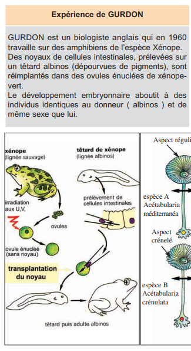
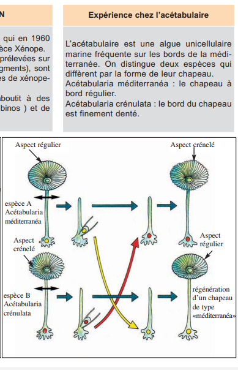
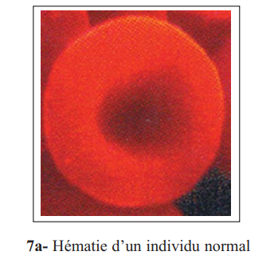
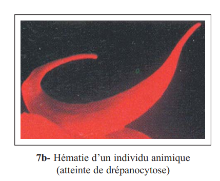
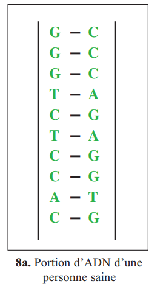
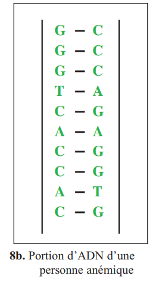
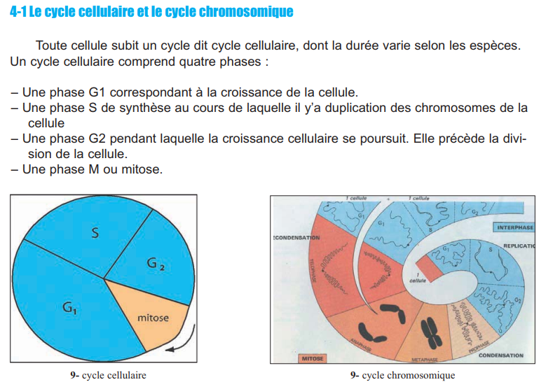
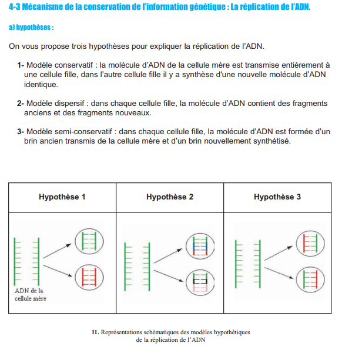
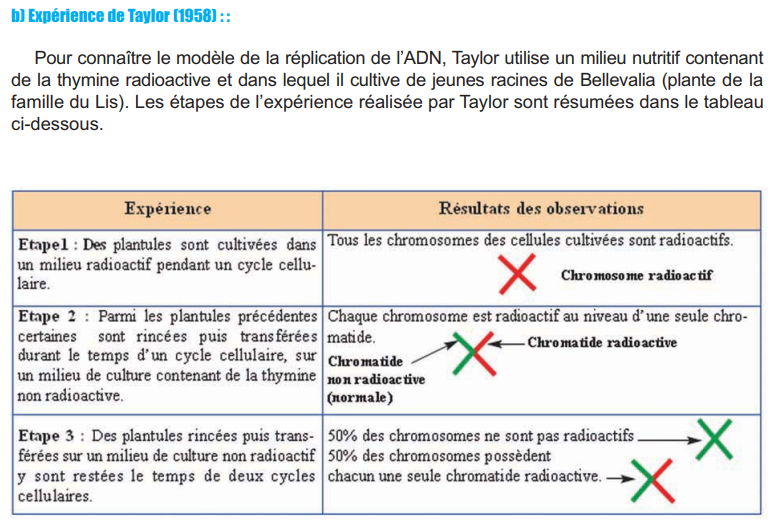
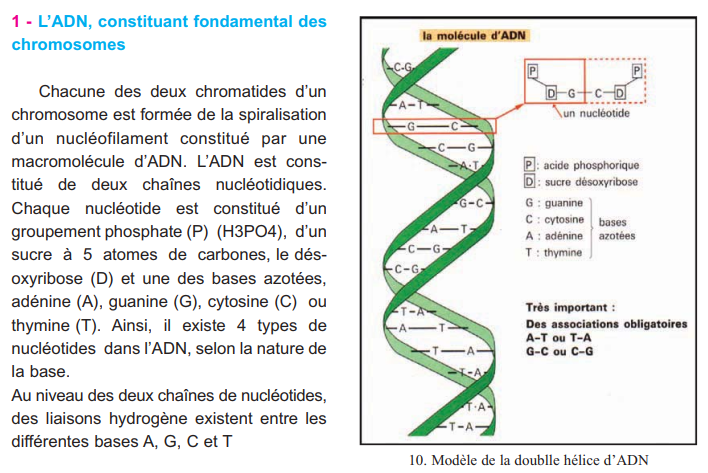

D'après le programme officiel tunisien (Thème 3, Objectif 4 — p.19), ce chapitre vise à :
1 Poser le problème du support et de la nature de l'information génétique
2 Analyser l'expérience de Griffith (transformation bactérienne)
3Identifier l'ADN comme support de l'information génétique
4 Présenter la composition chimique de l'ADN et son modèle structural
5 Expliquer la réplication de l'ADN selon le modèle semi-conservatif
6 Comprendre que la réplication assure la stabilité de l'information génétique
📚 Préacquis
Ch.1 — Le noyau contient la chromatine (ADN). Les chromosomes = ADN condensé.
Ch.3 — La mitose assure la reproduction conforme. Phase S = duplication de l'ADN.
Une expérience scientifique suit la démarche : hypothèse → expérience → résultat → conclusion.
❓ 3 Questions directrices
Où est localisée l'information génétique ?
Quelle est la nature chimique du support de l'IG ?
Comment l'IG est-elle conservée lors de la division cellulaire ?
🧠 Comprendre avant de mémoriser
Ce chapitre répond à 3 questions fondamentales : où est l'information génétique ? (dans le noyau) · qu'est-ce que c'est ? (l'ADN) · comment est-elle conservée ? (réplication semi-conservative). La logique suit la démarche scientifique historique : expériences de Gurdon et Acétabulaire → Griffith → Avery → Watson & Crick → Taylor.
Clique sur chaque notion · Pièges CAPES et connexions révélés
📍
Localisation
Gurdon · Acétabulaire → Noyau
🧬
Nature : l'ADN
Griffith · Avery · Double hélice
🔄
Réplication
Semi-conservative · Taylor
⚠️
3 Pièges
Erreurs fréquentes CAPES
🔗
Connexions
Ch.1 · Ch.3 · Thème 1
📍 Localisation de l'IG — les expériences historiques
Deux expériences majeures démontrent que l'IG est dans le noyau : Gurdon (1960) transplante des noyaux de cellules intestinales de xénope albinos dans des ovules énucléés → têtards albinos. Acétabulaire : la greffe de noyau détermine la forme du chapeau.
Expérience
Principe
Conclusion
Gurdon (1960)
Noyau cellule intestinale → ovule énucléé
Le noyau contrôle le développement
Acétabulaire
Greffe noyau entre 2 espèces
Le noyau détermine les caractères
💡 Énucléé = privé de noyau
Un ovule énucléé = ovule dont on a retiré le noyau. Il ne contient plus d'IG. On y injecte un nouveau noyau → le développement reprend selon l'IG du noyau injecté.
🧬 Nature : l'ADN est le support de l'IG
Griffith (1928) : pneumocoques S (virulents) tués transforment les R (non virulents) en S vivants. Avery identifie l'ADN comme le « principe transformant ». Watson & Crick (1953) : modèle double hélice.
Expérience
Résultat clé
Griffith (1928)
Transformation R→S = « principe transformant »
Avery (1944)
ADN = principe transformant (pas les protéines)
Watson & Crick (1953)
ADN = double hélice (A=T, G≡C)
🔄 La réplication semi-conservative
3 hypothèses : conservatif, dispersif, semi-conservatif. Taylor (1958) avec thymine radioactive sur Bellevalia confirme le modèle semi-conservatif : chaque molécule fille = 1 brin ancien + 1 brin nouveau. Phase S du cycle cellulaire.
🔍 Mécanisme : Ouverture double hélice → chaque brin sert de matrice → ADN polymérase incorpore nucléotides complémentaires → 2 molécules identiques (1 ancien + 1 nouveau).
⚠️ 3 Pièges
⚠️ Griffith : S tuées = S vivantes ? ▼
S tuées seules → souris survivent. S tuées + R vivantes → souris meurent, on retrouve S vivantes. Les S tuées ont transformé les R en S. Le « principe transformant » = ADN.
⚠️ A=T et G≡C ≠ A+T/G+C=1 ▼
A/T=1 et G/C=1 (complémentarité). Mais A+T/G+C varie selon les espèces. A+G/T+C=1 toujours (Chargaff).
⚠️ Réplication = phase S (interphase) ≠ mitose ▼
La réplication a lieu pendant la phase S de l'interphase, PAS pendant la mitose. La mitose répartit l'ADN déjà dupliqué.
1. Pourquoi l'expérience d'Avery est-elle plus précise que celle de Griffith ?
Griffith a montré l'existence d'un « principe transformant » sans l'identifier. Avery a isolé chimiquement l'ADN et les protéines, puis testé chaque composant séparément. Seul l'ADN transforme les R en S → preuve directe.
2. Si on met une cellule dans un milieu avec des nucléotides radioactifs pendant une génération, puis dans un milieu normal pendant la génération suivante, quel pourcentage d'ADN sera radioactif ?
Génération 1 : 100% radioactif (tous les brins). Génération 2 (réplication semi-conservative) : 50% des molécules ont 1 brin radioactif + 1 brin normal, 50% ont 2 brins normaux. C'est exactement l'expérience de Taylor.
🧪 Activité 1 — Localisation de l'Information Génétique (p.216)
Où est localisée l'IG ? — Expériences de Gurdon et Acétabulaire
Deux expériences historiques démontrent que l'information génétique est localisée dans le noyau de la cellule, et non dans le cytoplasme.

📷 Fig.1 — Expérience de Gurdonp.216

📷 Fig.2 — Expérience Acétabulairep.216
✏️ Mini-quiz
1. Gurdon transplante des noyaux de cellules intestinales de xénope dans des ovules énucléés → têtards . Conclusion : l'IG est dans le .
2. Chez l'Acétabulaire, la greffe d'un noyau de l'espèce A dans l'espèce B donne un chapeau de type .
1. L'ADN est constitué de deux chaînes de . Chaque nucléotide = Phosphate + + Base.
2. La complémentarité : A s'unit à et G s'unit à .
🩸 Activité 3 — Qu'est-ce que l'Information Génétique ? (p.221)
La séquence des nucléotides = information génétique
L'exemple de la drépanocytose montre qu'une seule base modifiée dans l'ADN change la protéine (HbA → HbS) et provoque la maladie. L'IG est donc l'ordre des nucléotides (la séquence).

📷 Fig.7a — Hématie normalep.221

📷 Fig.7b — Hématie drépanocytairep.221

📷 Fig.8a — Portion ADN sainep.221

📷 Fig.8b — Portion ADN anémiquep.221
✏️ Mini-quiz
1. La drépanocytose est due à . L'IG est donc .
🔄 Activité 4 — La Réplication de l'ADN (p.222–224)
La réplication semi-conservative
La réplication a lieu en phase S de l'interphase. 3 hypothèses : conservatif, dispersif, semi-conservatif. Taylor (1958) confirme le modèle semi-conservatif avec la thymine radioactive.

📷 Fig.9 — Cycle cellulairep.222

📷 Fig.11 — 3 modèlesp.223

📷 Fig.12 — Exp. Taylorp.224
🔍 Cycle cellulaire (p.222) : G1 (croissance) → S (synthèse ADN = réplication) → G2 (croissance) → M (mitose). La quantité d'ADN double en phase S (q → 2q).
✏️ Mini-quiz
1. La réplication est . L'enzyme principale est l'. La réplication a lieu en .
📋 BILAN — Pages 225–226 (6 blocs)
1 L'ADN, constituant fondamental des chromosomes (p.225)
Chaque chromatide est formée de la spiralisation d'un nucléofilament constitué d'une macromolécule d'. L'ADN est constitué de . Chaque nucléotide = . Il existe selon la nature de la base.

📷 Fig.10 — Modèle double hélicep.225
2 Structure en double hélice (p.225)
Chacune des 4 bases ne peut s'unir qu'à une base complémentaire : A s'unit à et C s'unit à . Le rapport A+G/T+C est égal à . Le rapport A+T/G+C est . Watson et Crick (1953) : deux chaînes enroulées en .
3 L'information génétique = séquence des nucléotides (p.225)
Le rôle fondamental de l'ADN est lié à l'. La succession des nucléotides ou séquence (nombre et ordre) est à la base de l'. Une modification d'une seule base (mutation) peut changer le message génétique (ex : ).
4 La réplication semi-conservative (p.226)
Au cours de la , les chromosomes se dédoublent et la quantité d'ADN (q → 2q). La réplication se fait selon le modèle . Les deux chaînes de la double hélice se . Chaque chaîne parentale sert de .
5 Le cycle cellulaire (p.226)
Le cycle cellulaire comprend 4 phases : G1 () → S () → G2 (croissance) → M (). La mitose dure 1 à 3 heures, le cycle complet dure .
6 Conservation de l'IG — Copie conforme (p.226)
Chaque molécule d'ADN fille est et possède . Toutes les réactions dépendent d'un complexe enzymatique dont la principale est l'. La réplication semi-conservative assure la .
📝 Exercices — Manuel p.227
🧬 Ex.1 — Brin complémentaire d'ADN (Exercice A, p.227)
Soit le brin d'ADN suivant : 5' — A T G C C T A G — 3'
1. Donner le brin complémentaire :
Le brin complémentaire est : 3' — — 5'. La complémentarité suit la règle : A en face de , T en face de , G en face de , C en face de .
📊 Ex.2 — Tableau du cycle cellulaire (Exercice B, p.227)
Compléter le tableau : nombre de chromosomes (n ou 2n), nombre de chromatides par chromosome, quantité d'ADN (q ou 2q).
Phase
Nombre chromosomes
Chromatides/chr
Quantité ADN
G1
G2
Métaphase
Anaphase
Télophase (1 cellule fille)
✏️ Ex.3 — QCM du manuel (p.227)
Les 4 questions du manuel (p.227) sont intégrées dans l'onglet ✏️ QCM (questions 1 à 4). Clique pour y accéder.
📋 Bilan Révision — Vérifie chaque objectif
Exercice principal + bonus d'approfondissement par objectif.
1 Localiser l'IG dans le noyau
L'expérience de Gurdon prouve que l'IG est dans . Un ovule ne peut pas se développer normalement.
🔍 Bonus : Chez l'Acétabulaire, si on greffe un noyau d'A. mediterranea dans A. crenulata, le chapeau sera de type .
2 Identifier l'ADN comme support de l'IG
Dans l'expérience de Griffith, les bactéries S tuées . Avery prouve que le principe transformant est .
🔍 Bonus : Si on traite l'extrait de S avec une enzyme qui détruit l'ADN, la transformation .
3 Maîtriser la structure de l'ADN
Un nucléotide = . A/T = et G/C = chez toutes les espèces.
🔍 Bonus : Si A=30% dans un ADN, alors T= et G+C=.
4 Expliquer la réplication semi-conservative
La réplication a lieu en phase . Le modèle est . Confirmé par .
🔍 Bonus : La quantité d'ADN dans une cellule passe de q à entre G1 et G2.
5 Comprendre que l'IG = séquence des nucléotides
L'IG est portée par . Une mutation = .
🔍 Bonus : La drépanocytose (HbS) diffère de l'HbA par .
6 Relier réplication et conservation de l'IG
La réplication semi-conservative assure la . L'enzyme clé est .
🔍 Bonus : De G1 à G2, le nombre de chromosomes reste mais chaque chromosome passe de 1 à .